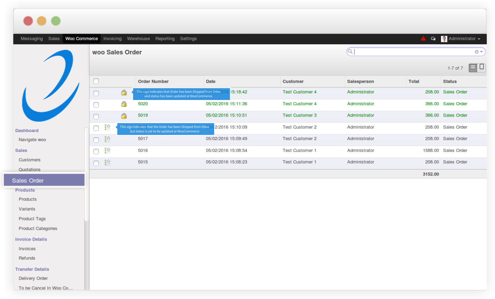
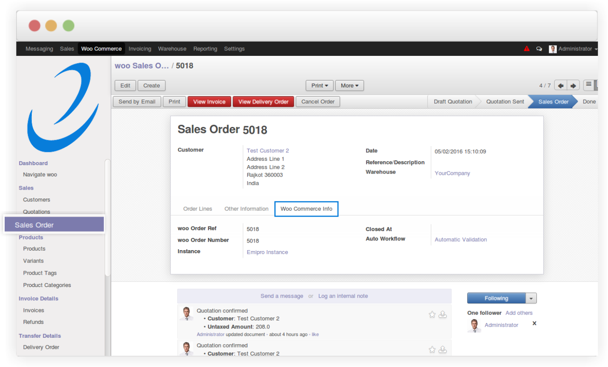

Sync Sale Orders from WooCommerce to Odoo
You can see WooCommerce Sale orders at the menu 'WooCommerce >> Sales >> Sales Orders'.
You can't create Sale Order manually and push it to WooCommerce.
Through only import Sale Order from any of your WooCommerce Instance,
you can see your Orders here. Import Sale Order can be performed by 2 ways.
1. Via automatic jobs to import Sale Orders at frequent amount of time
Go to WooCommerce cron jobs from Dashboard and click on WooCommerce Cron box.
At there, activate automatic Job for Import Order from WooCommerce.
However from WooCommerce settings you can set your preferred timings for auto import Sale Order from WooCommerce.
2. Manually Import Orders at any time
Go to menu 'WooCommerce >> Processes >> WooCommerce Operations'
and select your instances and option Import Orders.
Clicking on Execute button will straight away import sale orders
from WooCommerce to Odoo.
At list of WooCommerce Sale Orders, you will see an icon if Order is not updated at WooCommerce.
Once you ship full order from your warehouse and complete delivery order at Odoo, icon will be changed
in order to indicate you that order is marked as completed to WooCommerce.

